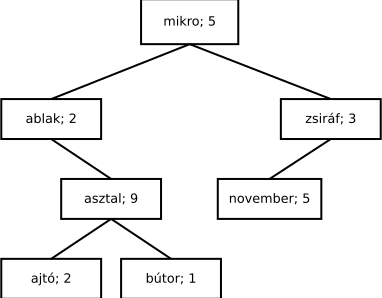
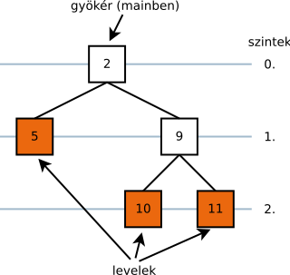

Egy szám bites ábrázolása gyakorlatilag a szám kettes számrendszerbeli ábrázolását jelenti. Az egyes biteket a legalacsonyabb helyiértékről kezdjük számozni, onnan haladva a magasabb helyiértékek felé (kettő hatványai). Az alacsony helyiértékű biteket gyakran alsó, a magasabbakat pedig felső helyiértékeknek is nevezzük. Beszédben gyakran össze-vissza szokás használni a bitek számozását; a legkisebb helyiértékű bitre néha elsőként, néha nulladikként hivatkozva. A nulladik a precíz.
A bites feladatok kulcsa mindig, hogy előállítunk egy maszkot, amelyikkel egy adott bitre „hivatkozni” tudunk a számon belül. Ezt legegyszerűbben a balra léptető operátorral tudjuk megtenni. Ha vesszük az 1-et, amely binárisan csupa nulla, és a végén (a legkisebb helyiértéken) egy 1-es, és azt toljuk el balra, akkor egy olyan számot kapunk, amelyik mindenhol nulla, csak az adott helyiértéken tartalmaz egyetlen 1-est:
76543210 -------- 00000001 ez az 1 binárisan 00000010 1<<1 (1-gyel balra tolva) 00000100 1<<2 00001000 1<<3 00010000 1<<4 00100000 1<<5Ezt a maszkot tudjuk pl. binárisan „hozzávagyolni” egy számhoz, ha azt szeretnénk, hogy a számnak az adott bitjét 1-be állítsuk. Az adott helyiértéken a művelet után biztosan 1-es lesz, mert „bármi” VAGY „igaz” az „igaz”. Például:
10011101 a szám |00100000 1<<5 --------- 10111101Ha egy bitet meg szeretnénk vizsgálni, akkor bitenként „hozzáéselve” a számhoz ezt a maszkot nullát fogunk kapni, vagy a maszkot kapjuk meg – attól függően, hogy eredetileg a számban az adott helyen 0 vagy 1 volt. (Az így keletkező szám egyébként C-ben logikai értéknek is használható, hiszen ha az adott helyen 1-es bit volt, akkor az eredmény nem nulla.) Ilyenkor nem a maszk 1-es bitje, hanem a többi 0 a fontos nekünk, mert azok biztosítják azt, hogy a vizsgált biten kívül mindenhol máshol 0 legyen:
10011101 a szám &00010000 1<<4 --------- 000100000-ba állítani egy bitet ugyancsak a bitenkénti és operátorral tudunk. Ehhez viszont a maszk minden egyes bitjét negálnunk kell, előállítva egy olyan számot, amely csupa 1-es, és az adott helyen 0. Ha ezt hozzáéseljük egy számhoz, akkor annak a megadott helyen lévő bitje 0-ra változik, az összes többi megmarad:
10011101 a szám &11101111 ~(1<<4) --------- 10001101Bitet negálni a kizáró vagy operátorral
^ lehet.
Az állapotgép lényege, hogy a program a bemenet feldolgozása közben tárol egy belső állapotot, amelyet az addigi bemenet alapján alakított ki; az új bemenet függvényében pedig megváltoztatja az állapotát és/vagy kimenetet is produkál. Leggyakrabban szövegfeldolgozásra használják; de bármilyen feladatnál alkalmas lehet, ahol egy adott bemenetre az előző bemenetektől függően máshogy kell reagálni.
Az állapotgépet állapotátmeneti gráffal vagy táblázattal adhatjuk meg. Egy egyszerű példa az ly-számláló. Ennek az automatának két állapota van: egy alapállapot (amikor is az előző karakter nem l betű volt), és egy l betűs állapot (amikor igen). Ha a bemenetről érkezik egy l betű, akkor abba az állapotba ugrunk; felkészülve ezzel arra az esetre, ha az azutáni y lesz. Ha bármi más, akkor alapállapotban maradunk.
Az állapotgép megtervezése egyszerű. A táblázat oszlopaiba felvesszük azokat a bejövő karaktereket, amelyek számunkra valamilyen különleges jelentőséggel bírnak. A táblázat első sorába pedig felvesszük az alapállapotot. Kitöltjük a hozzá tartozó oszlopokat; ha ehhez új állapotokat kell felvenni, akkor a táblázatnak új sorai lesznek. Később azokat is kitöltjük, és ezt egészen addig folytatjuk, amíg el nem fogynak az üres sorok.
| l | y | egyéb | |
|---|---|---|---|
| alap | lbetű | - | - |
| lbetű | - | szám++ alap | alap |
Az állapotgépeknél egy jel (pl. egy karakter, ha szöveg a bemenet)
beolvasása után az az épp aktuális állapot szerint más-más módon kezelendő.
Ezt egyszerűbb feladatoknál a switch () utasítással szokás megoldani,
mivel az adja a legáttekinthetőbb kódot; az egyes állapotokhoz
pedig érdemes egy felsorolt típus (enum) elemeit rendelni.
Gyakran egy állapothoz tartozó kódrészleten belül is egy switch () van,
amely pedig a bejövő jel (karakter) alapján választja szét az eseteket. Jól használható
a default kulcsszó az „összes többi” karakterhez
való programrész megadásához.
Az állapotgépes feladatoknál alapvető, hogy beolvasás csak egyetlen
egy helyen történik a ciklusban! Ezen kívül a
getchar() függvénynél figyelni kell annak visszatérési típusára, ami int.
A sima char nem tudja tárolni az EOF értéket.
A beolvasást és a fájl vége jel keresését a C-ben egy kifejezésbe lehet tömöríteni,
ez a while ciklusok fejlécében a (c=getchar())!=EOF rész. Ezt úgy kell
értelmezni, hogy előbb kiértékelődik a c=getchar() értékadás,
aminek a hatására a beolvasott karakter c-be kerül. Utána ennek az értékadás
kifejezésnek az értéke (ami megegyezik a beolvasott karakterrel) hasonlítódik össze
EOF-fal. Azért kell bezárójelezni az értékadást, mert különben a getchar()!=EOF
kifejezés értéke kerülne a c váltózóba, ami meg nem a beolvasott karakter, hanem
az összehasonlítás eredménye.
Nem tudjuk a program írásakor, mekkora tömb kell… Foglaljuk le futás közben!
Ennek módja:
a malloc() függvénnyel a program futása közben memóriaterületet tudunk foglalni,
amely visszatér a lefoglalt terület kezdőcímével (pointerével).
A mallocnak a méretet bájtokban kell
megadni. Ha nincs elég memória, NULL-lal tér vissza.
A lefoglalt memóriaterületet free()-vel kell
felszabadítani. Az utóbbinak a méretet már nem szükséges megadni,
csak azt a pointert, amit a malloctól kaptunk.
A séma a következő, ahol a Valami azonosító
helyére bármilyen típus nevét beírhatjuk:
Valami *ptr; ptr=(Valami*) malloc(darab*sizeof(Valami)); ... free(ptr);
Érdemes a foglalást a lehető legkésőbb elvégezni, a felszabadítást pedig a lehető leghamarabb. Így talán kisebb a valószínűsége, hogy elfelejtődik. Tipikus memóriakezelési hibák: inicializálatlan pointer, fel nem szabadított memória, elveszett pointer, többször felszabadított memória.
A malloc() visszatérési típusa void *.
A (Valami*) cast elvileg elhagyható, mivel ez
automatikusan konvertálódik Valami*-ra.
A C++ (következő félév, prog2) szigorúbb, ezt nem engedi, ezért
ki szokás írni.
A lenti függvény összefűz két sztringet, és az új, ezáltal keletkező sztringet egy újonnan foglalt dinamikus memóriaterületen adja. Mivel a két bemenő sztring hosszának vizsgálatával meg tudja mondani, hogy mekkora lesz az összefűzött sztring (a két hossz és +1 a lezáró nulla miatt), ezért a foglalás után biztonságosan el tudja végezni a másolásokat. Persze itt nem feltétlenül szükséges megjegyezni a méretet is, hiszen azt éppen a lezáró nullából meg tudjuk határozni bármikor.
char *osszefuz(char *egyik, char *masik) {
int hossz = strlen(egyik)+strlen(masik)+1;
char *eredmeny = (char*) malloc(hossz*sizeof(char)); // foglal
if (eredmeny==NULL)
return NULL;
strcpy(eredmeny, egyik);
strcat(eredmeny, masik);
return eredmeny;
}char *almafa;
almafa = osszefuz("alma", "fa");
printf("%s", almafa);
free(almafa); // felszabadít
Látható, hogy ez megoldja az élettartam problémáját is. Bár
a keletkező sztring a függvényben jön létre,
visszatérve az új sztringet tároló memóriaterület
nem szabadul fel automatikusan, hanem a hívó döntheti el, hogy
mikor nincsen már a továbbiakban szüksége arra. Vissza
ez a függvény nem a sztringet adja, hanem csak egy pointert a lefoglalt
memóriaterületre. A lokális char* eredmeny változó
megszűnik, de azt a visszaadáskor lemásoljuk!
Fontos figyelni arra, hogy fel is szabadítsuk a memóriaterületet, ha már nincsen rá szükség. Mivel a függvény ezt nem tudja megtenni (épp az a feladata, hogy foglalja le a sztringet, de ne szabadítsa fel), ez csakis a hívó feladata és felelőssége lehet.
Emiatt a visszakapott pointert el kell menteni egy változóba,
hiszen ha elfelejtjük, akkor semmi mód nem lesz már arra, hogy
felszabadítsuk azt a memóriaterületet. Természetesen az
almafa=osszefuz(… értékadás ilyenkor nem sztring másolás,
hanem csak egy pointer értékadás. almafa típusa
pointer, a visszaadott érték is pointer, és ezt másoljuk az értékadással.
A láncolt lista lényege a következő. Minden egyes dinamikusan foglalt struktúra tartalmaz egy segédadatot is: a listában következő elem memóriacímét. A lista legelejére egy pointerrel hivatkozunk; ezzel természetesen az egész listát megadjuk, mivel az összes többi elemre mutat az őt megelőző elem pointere. A legutolsó elem NULL pointert tartalmaz, jelezve ezzel, hogy ott a lista vége.
typedef struct Esemeny { // a struktúra
char leiras[101];
int ev, honap, nap; /* adatok, amiket tarol egy elem */
int ora, perc;
struct Esemeny *kov; // pointer ugyanilyen típusú struktúrára
} Esemeny;
A lista előnye a tömbhöz képest, hogy egyesével tudunk új elemeket hozzátenni és
törölni. Hátránya, hogy nem tudunk közvetlenül, véletlenszerűen, össze-vissza
hivatkozni bármelyik elemére. Ha kell egy lista negyedik eleme, akkor az elejétől
el kell indulnunk, a pointereket követve, amíg el nem jutunk az negyedikig. Ha
az elso pointer mutat a lista első elemére, akkor elso->kov
a másodikra, elso->kov->kov a harmadikra stb.
Az ilyesmire persze ciklust írunk.
A fák dinamikus adatszerkezetek; amelyek az adatokat csomópontjaikban és/vagy éleiken tárolják; az egyes csomópontokból pedig további csomópontok származnak le. A leszármazott csomópontokat gyerekeknek nevezzük; szülő csomópontnak pedig azokat, amelyekből azok kiindulnak. A legfelső csomópont a gyökér. A gyerek nélküli csomópontok a levelek.
Egy adott csomópont valamely gyermeke önmaga is csomópont, amelynek további gyermekei lehetnek. Másképpen, a fa egyik részfája önmagában is fa. Ahogy egy igazi fának az ágaiból további ágak indulnak ki, amelyek önmaguk is ágak, ugyanilyen tulajdonsággal. Ez az adatszerkezet rekurzív. A fa nagysága elvileg tetszőlegesen nagy lehet. Hogy az őt tároló struktúra ne legyen akármilyen nagy (meg változó hosszúságú), továbbá hogy lehessen jelezni, egy adott helyen egyáltalán van-e leszármazott vagy nincs, egy csomópont gyermekeit dinamikusan foglaljuk, és pointerével tároljuk.
A csomópontok közötti leszármazási viszony többféle dolgot jelenthet. Leggyakoribbak a bináris fák, amelyekben minden csomópontnak maximum két gyermeke van. Ezek neve rendszerint bal és jobb. A bináris fákat általában keresőfákként alkalmazzák; például egy szavakat tároló fa esetén egy adott csomópontban az ABC-ben tőle előrébb lévő szavak a bal oldali részfában, a tőle hátrébb lévőek pedig a jobb oldali részfában vannak (és a leszármazottak ugyanígy). Egy adott szót megtalálni így könnyű; nem kell például egy egész listát egyesével végigjárnunk, hanem mindig egy, a „nincs meg”-nél konkrétabb információnk is van: balra vagy jobbra menjünk tovább a fában az adott szó megtalálásához.
A legfontosabb gondolat: mivel a fa, mint adatstruktúra rekurzív, az azt feldolgozó programkód is rekurzív.
Ha meg akarjuk számolni egy fa összes csomópontját, azt a feladatot önmagára tudjuk visszavezetni: megszámoljuk, hogy a részfáiban hány csomópont van (azok is fák!), és még hozzáadunk egyet, az pedig a jelenlegi csomópont, amiről beszélünk.
Ha meg akarjuk számolni, hogy egy fának hány levele van (ahonnan már részfák nem indulnak ki), akkor ugyanez a gondolatmenet. Ha egy csomópontnak nincs leszármazottja, a válaszunk 1. Ha van, akkor viszont annyi levele van az adott részfának, ahány levél van a bal oldali részfában, plusz ahány levél van a jobboldali részfában (most épp bináris fát feltételezve).
Ha azt akarjuk megszámolni, hogy egy adott fának egy adott szinten (emeleten) hány csomópontja van, az is könnyű: annyi ilyen csomópontja van, ahány ilyen van a bal részfában, plusz ahány ilyen van a jobb részfában. Csak arra kell figyelni, ha egy adott szinttől lefelé az 5. szinten keressük a csomópontokat, akkor a gyerekeik szemszögéből nézve az a 4. szintet jelenti.
Ha egy fát szeretnénk törölni a memóriából, akkor előbb törölni kell a részfáit, és a hozzá tartozó memóriaterületet utána lehet felszabadítani.
Feladat: implementáljuk az algoritmusokat. Próbáljuk ki őket a jobb oldali képen látható fán.
#include <stdio.h>
#include <stdlib.h>
typedef struct Fa {
int adat;
struct Fa *bal, *jobb;
} Fa;
/* 1. feladat megoldasa: egy fa csomopontjait szamolja meg. */
int csomopontok(Fa *gyoker) {
/* ha egyaltalan nincs, akkor nyilvan 0 */
if (gyoker==NULL)
return 0;
/* aktualis + bal oldaliban + jobb oldaliban */
return 1+csomopontok(gyoker->bal)+csomopontok(gyoker->jobb);
}
/* 2. feladat megoldasa: a leveleket szamolja meg. */
int levelek_szama(Fa *gyoker) {
/* 0 levél van, ha nincs is fa */
if (gyoker==NULL)
return 0;
/* ha ennek nincs leszarmazottja, ez egy, azaz 1 level. */
if (gyoker->bal==NULL && gyoker->jobb==NULL)
return 1;
/* ha ez nem level, akkor viszont nezzuk, hogy az innen
kiindulo reszfakban hany level van. */
return levelek_szama(gyoker->bal)+levelek_szama(gyoker->jobb);
}
/* 3. feladat megoldasa: adott szinten levo csomopontokat szamol meg. */
int adott_szinten(Fa *gyoker, int szint) {
/* ha nincs is fa, akkor nyilvan 0 */
if (gyoker==NULL)
return 0;
/* ha pont ezt a szintet nezzuk, akkor 1 a valaszunk,
es a lejjebb levoket folosleges megnezni */
if (szint==0)
return 1;
/* ha lentebbit keresunk, akkor bal+jobb; de az o
szemszogukbol nezve eggyel kevesebbedik szint */
return adott_szinten(gyoker->bal, szint-1)+
adott_szinten(gyoker->jobb, szint-1);
}
/* 4. feladat: egy fa torlese. */
void torol(Fa *fa) {
if (fa->bal!=NULL)
torol(fa->bal);
if (fa->jobb!=NULL)
torol(fa->jobb);
free(fa);
}
/* ez a fuggveny arra kepes, hogy kirajzolja
* a fat - tobbe-kevesbe kovetheto modon.
* a kirajzolt fa 90 fokkal el van forgatva;
* bal oldalon van a gyoker, tole jobbra indulnak
* a leszarmazottak. nem kerte a feladat. */
void kirajzol_eltolva(Fa *gyoker, int szint) {
if (gyoker==NULL)
return;
kirajzol_eltolva(gyoker->jobb, szint+1);
/* %*d: a * miatt a szelesseget a kov. parameterbol olvassa */
printf("%*d\n", szint*5, gyoker->adat);
kirajzol_eltolva(gyoker->bal, szint+1);
}
/* ez a fuggveny csak azert van, hogy az igazi
* kirajzolo fuggvenynek megadja a kezdeti 0-s
* parametert. nem kerte a feladatkiiras! */
void kirajzol(Fa *gyoker) {
kirajzol_eltolva(gyoker, 0);
}
/* letrehoz egy leszarmazottak nelkuli csomopontot,
* amelyik a parameterbeli adatot tarolja.
* ez a tiszta megoldas! egybol nullazzuk
* a pointereket, max kesobb bekerul mas.
* nem kerte ezt a fuggvenyt a feladatkiiras, de
* jo szokas igy csinalni. */
Fa *uj(int adat) {
Fa *uj=(Fa *) malloc(sizeof(Fa));
uj->bal=uj->jobb=NULL;
uj->adat=adat;
return uj;
}
int main(void) {
Fa *gyoker=NULL;
int i;
/* varazsolok nehany leszarmazottat. ez az a
fa lesz, mint ami a rajzon is van fent! */
gyoker=uj(2);
gyoker->bal=uj(5);
gyoker->jobb=uj(9);
gyoker->jobb->bal=uj(10);
gyoker->jobb->jobb=uj(11);
printf("Rajz:\n");
kirajzol(gyoker);
printf("Csomopontok: %d\n", csomopontok(gyoker));
printf("Levelek: %d\n", levelek_szama(gyoker));
for (i=0; i<=2; ++i)
printf("%d. szinten: %d\n", i, adott_szinten(gyoker, i));
torol(gyoker);
return 0;
}A fa mérete véges, mindig ott van vége, ahol NULL pointert találunk
(egy adott csomópontnak valamelyik, vagy mindkét irányba már nincs több
leszármazottja). Többféle megoldás is lehetséges a bejárásra;
tipikusan annak függvényében, hogy a fa_mutató==NULL
esetet hol ellenőrizzük, a függvény meghívása előtt vagy után (vagyis a függvény
első sora ez, vagy a meghívás előtt ellenőrizzük már).
Ezt az ellenőrzést egyébként a függvény elején érdemes megtenni. Egyrészt mivel akkor a megoldás robusztusabb (nincs gondja a NULL pointerrel), másrészt mivel a NULL pointer is egy fa! Az az üres fa.
Írjunk C függvényt, amelyik tetszőleges, valós „matematikai” függvényt képes integrálni. A függvény bemenő adatai legyenek az integrálandó tartomány két vége és a lépésköz; kimeneti adat a közelítő integrál.
A numerikus integrálás algoritmusa független az integrálandó függvénytől.
A feladat függvény pointerekkel oldható meg. A függvény pointer egy adott kódrészletre mutat a memóriában, egy függvényre. A függvény pointer típusához hozzá tartoznak a fv. visszatérésének típusa és a paraméterek típusai is; eltérő bemenő paraméterekkel rendelkező, vagy eltérő visszatérési típussal rendelkező függvények természetesen nem kompatibilisek egymással. A függvényre mutató pointer deklarációjának módja:
vissza_tip fv (parameter_tip_1, stb); /* ez a fuggveny */
vissza_tip (*ptr)(parameter_tip_1, stb); /* ilyen a ra mutato ptr */mint a függvény prototípusa, csak a neve helyett a változó neve, elé csillag (mert pointer), be zárójelbe (hogy ne vissza_tip pointerrel visszatérő ptr nevű függvényt deklaráljunk). Meghívni ugyanúgy lehet, mint a függvényeket; ahogy a dinamikus tömböknél is a pointer tömbként volt használható. A függvény neve pedig, () nélkül, a függvényre mutató pointer maga. Ebben a feladatban:
double fuggveny(double); /* egyvaltozos matematikai fv, neve "fuggveny" */
double (*ptr)(double); /* egyvaltozos matematikai fv poitnere, neve "ptr" */
ptr=fuggveny; /* beallitjuk ra a pointert */
printf("%g", ptr(5)); /* meghivjuk a fv-t a pointeren keresztul */#include <math.h>
#include <stdio.h>
double konstans(double x) {
return 1.0;
}
double iksznegyzetpluszketikszplusz7(double x) {
return x*x+2*x+7;
}
/* A feladat megoldasa ez a fuggveny. */
/* Az fv parameter tipusa: 1db double parameteru, double
visszateresi erteku fuggvenyre mutato pointer. */
double integral(double min, double max,
double step, double (*fv)(double))
{
double sum, x;
sum=0;
for (x=min; x<max; x+=step)
sum+=fv(x)*step;
return sum;
}
int main(void) {
printf("%f\n", integral(0, 1, 0.01, konstans));
printf("%f\n", integral(0, 1, 0.01, iksznegyzetpluszketikszplusz7));
printf("%f\n", integral(0, 1, 0.01, sqrt)); /* math.h */
printf("%f\n", integral(0, 1, 0.01, sin)); /* math.h */
return 0;
}Egy tömb rendezések algoritmusa független attól, hogy mik azok az elemek, amiket rendezni kell, és hogyan kell őket összehasonlítani. Meg tudjuk fogalmazni általánosságban is, és ugyanúgy működik számokra, mint mondjuk szavakra.
A C tartalmaz egy könyvtári függvényt, a qsort()-ot, amelyik képes
bármilyen elemekből álló, bármekkora tömböt rendezni a gyorsrendezés néven ismert
algoritmussal.
Ezt a következőképpen valósítja meg. A függvény fejléce így néz ki:
void qsort(void *base,
size_t nmemb, size_t size,
int(*compar)(const void *, const void *));
A függvény első paramétere a rendezendő tömb kezdőcíme. A második a tömb elemszáma.
A harmadik egy elem mérete. Erre azért van szükség, mert a qsort() számára
ismeretlen az általunk megadott tömb elemeinek a típusa; viszont ha tudja, hogy egy elem
hány bájtos, akkor meg tudja cserélni őket (annyi bájtos részeket kell megcserélnie
a memóriában).
Innen fogja tudni azt is, hogy egy adott elem a memóriában hol kezdődik (a tömb elejét
is csak void * mutatóval tudtuk megadni).
A negyedik paraméter az összehasonlító függvényre mutató pointer; ezt a függvényt nekünk
kell megírnunk. A függvény két memóriacímet kell átvegyen (a két const void *),
hogy mely elemeket kell összehasonlítania. void, mert a típusokat a
qsort() nem nézi (különben nem lenne általános), és const, mert
ez a függvény nem változtatja meg az elemeket. A visszatérési értéke pedig a következőképpen
kell kinézzen:
- Egy tetszőleges negatív szám, ha az első elem kisebb, mint a második.
- Nulla, ha a két elem egyenlő.
- Egy tetszőleges pozitív szám, ha az első elem a nagyobb.
Így a qsort() növekvő sorrendbe rendez. Ha csökkenő sorrendet szeretnénk,
akkor egyszerűen a negatív-pozitív dolgot meg kell fordítani. Egyébként az strcmp()
függvény pont ugyanilyen visszatérési értéket ad, ezért sztringek rendezésénél az pont jó
összehasonlító függvénynek!
A megírandó összehasonlító függvény ezek szerint így néz ki általánosságban:
int osszehasonlito(const void *pelso, const void *pmasodik) {
const SajatTipus *elso=(const SajatTipus *)pelso;
const SajatTipus *masodik=(const SajatTipus *)pmasodik;
if (*elso kisebb mint *masodik)
return -1;
if (*elso nagyobb mint *masodik)
return 1;
return 0;
}
A két összehasonlítandó elemet void * pointerrel kell átvenni, amit belül
át kell alakítani (castolni) a saját típus pointerére.
Az összehasonlítás módja pedig nyilván az adott
típustól és feladattól függ. A qsort() függvény hívása így néz ki:
qsort(tomb, meret, sizeof(tomb[0]), osszehasonlito);